7210A35 R.R. FRONT SIDE PANEL (assembly)
- Path
- Procedures > 72 PANELS AND FRAME > 7210 REMOVING REFITTING > 7210A STRUCTURAL ELEMENTS (FRONT PART) > 7210A35 R.R. FRONT SIDE PANEL (assembly)
- Kind
- repair procedure (removal / refitting; the operation number is the code)
- Applies to
- all engines; all production periods
- Interactive page
- https://sloeber94.github.io/elrnDB-fMltpl/en/#/2892305
Applies to: all engines; all production periods
 Removing
Removing
 Refitting
RefittingRemove fouling parts from the dashboard cross piece trim.
7210A55 R.R. PILLAR PANEL BRACKET/REINFORCEMENT
7210A15 R.R. HEADLAMP HOUSING/FRONT WING CROSSMEMBER
7210A16 R.R. WING LOWER CROSSMEMBER
Check if any of the connected parts are deformed by checking body alignment dimensions. Use appropriate measurement tools (reference rigs, templates or gauges).
If necessary, straighten the body before cutting the part.
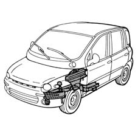
Applies to: all engines; all production periods
Use a rotary brush to expose the spot welds.
1. Drill out the spot welds shown in the figure.
2. Remove the part shown in the figure.
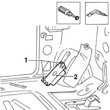
Applies to: all engines; all production periods
1. Drill out the spot welds shown in the figure.
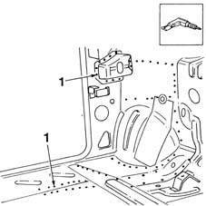
Applies to: all engines; all production periods
1. Use a chamfering machine to remove the weld spots shown in the figure.
2. Drill out the spot welds shown in the figure.
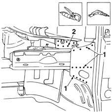
Applies to: all engines; all production periods
1. Drill out the spot welds shown in the figure.
2. Remove the front side piece from the car.
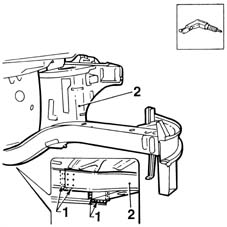
Applies to: all engines; all production periods
Use a grinding wheel to remove the welding residues.
1. Drill some holes in the car as shown in the figure.
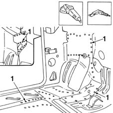
Applies to: all engines; all production periods
Refitting
RemovingUse a rotary brush to remove the rust-proofing treatment around the edge of the parts.
1. Drill some holes in the parts as shown in the figure.
2. Apply electroweldable paint in the areas indicated.
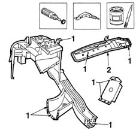
Applies to: all engines; all production periods
Fit the parts correctly on the car, secure them with Parker screws and check that they are correctly positioned using appropriate measuring instruments.
1. Fit the wing (1a), hinge, bonnet (1b) and bumper (1c).
Check the alignment and ensure the surrounding gaps are even.
Remove the parts fitted previously.
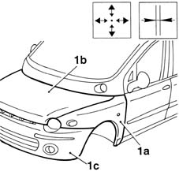
Applies to: all engines; all production periods
1. Use a MIG welder and fill weld the points shown in the figure.
2. Position the part shown in the figure.
3. Use a MIG welder to fill weld the areas shown in the figure.
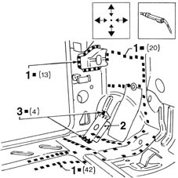
Applies to: all engines; all production periods
1. Use a spot welder to weld the points shown in the figure.
2. Use a MIG welder and fill weld the points shown in the figure.
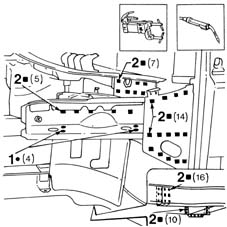
Applies to: all engines; all production periods
Use a grinding wheel to level the weld spots and remove any residue.
1. Use a rotary brush to clean the treated areas.
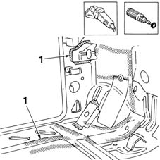
Applies to: all engines; all production periods
Apply rust-proofing to the welded areas.
1. Seal the join lines between car and part.
2. Apply foam protection.
3. Apply the sound-deadening panel.
Proceed with painting in accordance with the specified procedure.
4. Apply wax oil inside the rear wing.
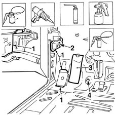
Applies to: all engines; all production periods
Refit fouling parts.
7210A16 R.R. WING LOWER CROSSMEMBER